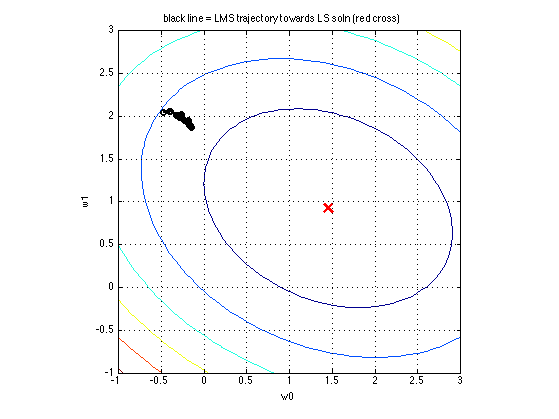

Least means squares (Widrow-Hoff) Demo
[X,y]=contoursSSEdemo;
d = 2;
w0 = [-0.5;2];
options.batchsize = 1;
options.verbose = true;
options.storeParamTrace = true;
options.storeFvalTrace = true;
options.maxUpdates = 20;
lambda = 0;
funObjXy = @(ww,XX,yy) LinregLossScaled(ww, XX, yy);
funObj = @(w) funObjXy(w, X, y);
opt.verbose = 'none';
opt.method = 'lbfgs'
opt.derivativeCheck = 'on';
[wopt, fopt, exitflag, outputOpt] = minfunc(funObj, w0, opt);
outputOpt.trace.fval'
what = X\y
[w, f, exitflag, output] = stochgradSimple(funObjXy, w0, options, X, y);
trace = output.trace;
[fvalTraceAvg, fvalTrace] = stochgradTracePostprocess(trace, funObjXy, X, y);
contoursSSEdemo(true);
whist2 = trace.params';
hold on
plot(whist2(1,:), whist2(2,:), 'ko-', 'linewidth',2);
title('black line = LMS trajectory towards LS soln (red cross)')
printPmtkFigure('lmsTraj')
figure;
plot(fvalTrace, 'ko-', 'linewidth', 2);
title('obj vs iteration')
horizontalLine(fopt, 'linewidth', 2);
printPmtkFigure('lmsRssHist')
if 0
figure;
plot(trace.stepSize, 'ko-', 'linewidth', 2);
title('stepsize vs iteration')
end
opt =
verbose: 'none'
method: 'lbfgs'
Checking Gradient:
Max difference between user and numerical gradient: 0.000002
Iteration FunEvals Step Length Function Val Opt Cond
1 2 3.73813e-01 -1.17733e+00 1.13602e+00
2 3 1.00000e+00 -2.13813e+00 2.10001e-01
3 4 1.00000e+00 -2.14456e+00 1.92747e-01
4 5 1.00000e+00 -2.15709e+00 1.05161e-05
Directional Derivative below progTol
ans =
Columns 1 through 4
-0.0123 -1.1773 -2.1381 -2.1446
Column 5
-2.1571
what =
1.4530
0.9278
20 batches of size 1
epoch 1
